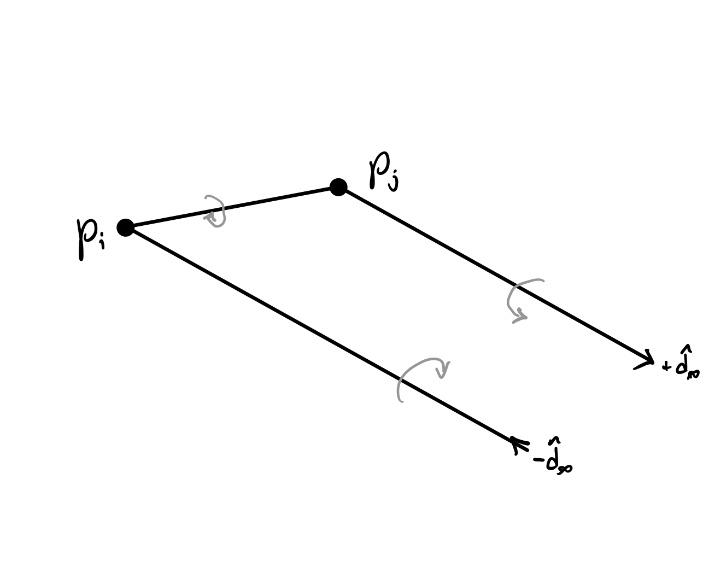
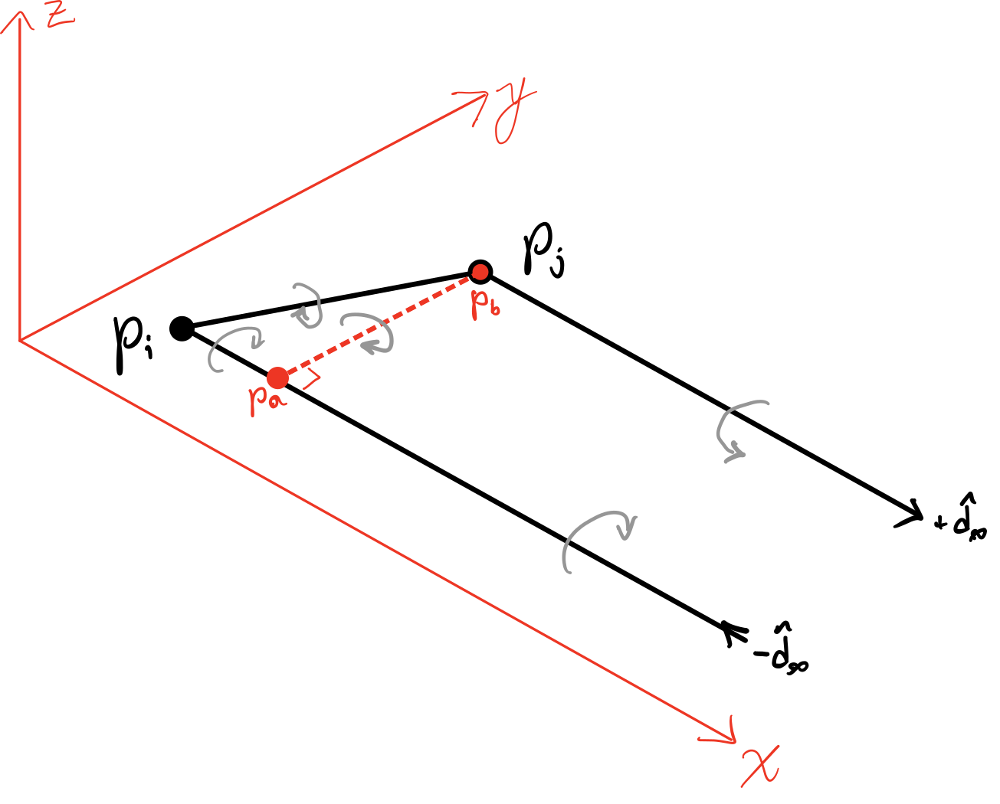
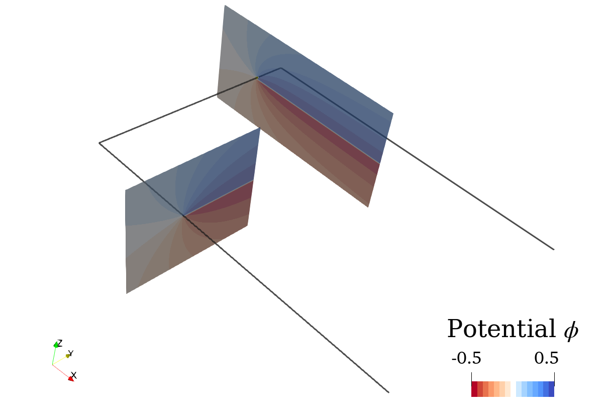
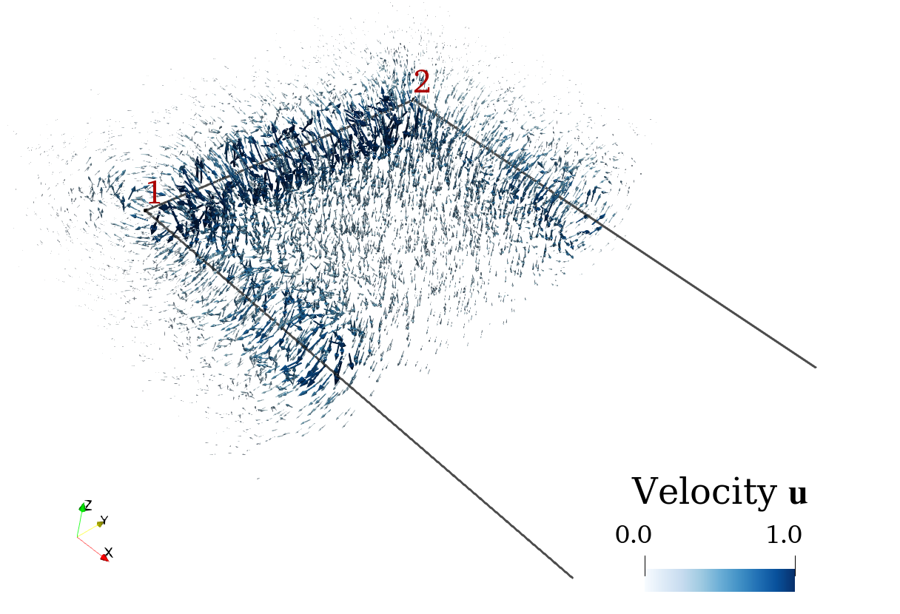
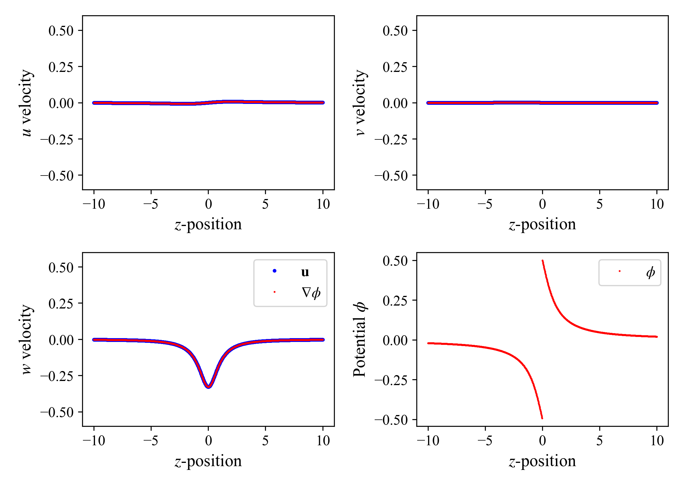

Semi-Infinite Doublet (Vortex Horseshoe)
(Adapted fron Moran, J. (1984), An introduction to theoretical and computational aerodynamics, Appendix F, p. 442)
Assume a constant-strength doublet panel that starts from $\mathbf{p}_a$ and $\mathbf{p}_b$ and extends infinitely in the $x$ direction laying in the $xy$-plane, as shown below. Since a finite doublet panel is the same than a vortex ring, the semi-infinite doublet panel corresponds to a horseshoe vortex.
NOTE: In order to have the normal of the doublet panel pointing in the $+z$ direction while having the horseshoe vortex going in the direction shown above (coming from $\infty$ to $a$, from $a$ to $b$, and going out from $b$ to $\infty$), we have to define $\boxed{\mu = -\Gamma}$.
Since the potential of a point doublet corresponds to the negative normal-derivative of the potential of a point source,
\[\begin{align*} \phi_{\text{point }\mu} = - \mu \frac{\partial}{\partial z}\left( -\frac{1}{4\pi r} \right) = -\frac{\mu}{4\pi}\frac{z}{r^3} ,\end{align*}\]
the potential of the semi-infinite constant-strength doublet panel is given by
\[\begin{align*} \phi_{\mu} (x,\, y,\, z) = -\frac{\mu}{4\pi} \int\limits_{y_a}^{y_b} \int\limits_{x_a}^{\infty} \frac{z}{\left[ (x-x')^2 + (y-y')^2 + z^2 \right]^{3/2}} \,\mathrm{d} x' \,\mathrm{d} y' .\end{align*}\]
According to Moran (p. 445), this integral becomes
\[\begin{align*} \phi_{\mu} (x,\, y,\, z) = -\frac{\mu}{4\pi} \left. \left[ \tan^{-1}\left( \frac{y'-y}{z} \right) + \tan^{-1}\left( \frac{ (y'-y)(x-x_a) }{ z \sqrt{(x-x_a)^2 + (y'-y)^2 + z^2} } \right) \right]\right\vert_{y_a}^{y_b} .\end{align*}\]
NOTE: $\tan^{-1}$ here is for outputs in the range $-\frac{\pi}{2}$ to $\frac{\pi}{2}$.
In the derivation above we have assumed that the bound vortex section $\mathbf{p}_b - \mathbf{p}_a$ is perpendicular to the semi-infinite direction $\hat{\mathbf{d}}_\infty$. That is, $\hat{\mathbf{d}}_\infty\cdot(\mathbf{p}_b - \mathbf{p}_a)=0$. This is in general not true since $\mathbf{p}_b - \mathbf{p}_a$ typically represents the trailing edge while $\hat{\mathbf{d}}_\infty$ is the direction of the freestream.
Given two arbitrary nodes $\mathbf{p}_i$ and $\mathbf{p}_j$ along the trailing edge and an arbitrary freestream direction $\hat{\mathbf{d}}_\infty$ as shown below (left), we define $\mathbf{p}_a$ as the closest point to $\mathbf{p}_j$ along the incoming semi-infinite vortex, as shown below (right).
|  |  |
This point is calculated as
\[\begin{align*} \mathbf{p}_a = \mathbf{p}_i + \left[ (\mathbf{p}_j - \mathbf{p}_i) \cdot \hat{\mathbf{d}}_\infty \right] \hat{\mathbf{d}}_\infty ,\end{align*}\]
which defines a bound vortex $\mathbf{p}_j - \mathbf{p}_a$ that is perpendicular to $\hat{\mathbf{d}}_\infty$. This bound vortex is used to define the following local coordinate system
\[\begin{align*} \bullet \quad & \hat{\mathbf{x}} = \hat{\mathbf{d}}_\infty \\ \bullet \quad & \hat{\mathbf{y}} = \frac{\mathbf{p}_b - \mathbf{p}_a}{\Vert \mathbf{p}_b - \mathbf{p}_a \Vert} \\ \bullet \quad & \hat{\mathbf{z}} = \hat{\mathbf{x}} \times \hat{\mathbf{y}} \end{align*}\]
where $\mathbf{p}_b = \mathbf{p}_j$.
The potential induced by this elements is then computed as the superposition of potential of the doublet panel defined by the vertices $\mathbf{p}_a$, $\mathbf{p}_i$, and $\mathbf{p}_j$ and the potential induced by the semi-infinite panel starting between $\mathbf{p}_a$ and $\mathbf{p}_j$.
NOTE: The doublet panel is purposely defined in the order $\mathbf{p}_a$, $\mathbf{p}_i$, and $\mathbf{p}_j$ as to define its normal through the right-hand rule as $\hat{\mathbf{n}}=-\hat{\mathbf{z}}$ and have the associated vortex ring matching the figure above.
The induced velocity is calculated as the velocity induced by a bound vortex between $\mathbf{p}_i$ and $\mathbf{p}_j$, plus the velocity induced by two semi-infinite vortices coming in and out of $\mathbf{p}_i$ and $\mathbf{p}_j$, respectively.
The velocity of the bound vortex is calculated as
\[\begin{align*} \mathbf{u}_\mathrm{ij} \left( \mathbf{x} \right) = \frac{\Gamma}{4\pi} \frac{\mathbf{r}_i \times \mathbf{r}_j}{ \Vert \mathbf{r}_i \times \mathbf{r}_j \Vert^2} \mathbf{r}_{ij} \cdot \left( \frac{\mathbf{r}_i}{r_i} - \frac{\mathbf{r}_j}{r_j} \right) ,\end{align*}\]
where $\Gamma = \mu$, $\mathbf{r}_{ij} = \mathbf{p}_j-\mathbf{p}_i$, $\mathbf{r}_i = \mathbf{x} - \mathbf{p}_i$, $\mathbf{r}_j = \mathbf{x} - \mathbf{p}_j$. The velocity of a semi-infinite vortex is calculated as follows.
Assume a semi-infinite vortex starting at $\mathbf{p}_0$ and extending in the direction $\hat{\mathbf{d}}$. Given a position $\mathbf{x}$ that is aligned with the starting point $\mathbf{p}_0$ (by aligned we mean that both $\mathbf{x}$ and $\mathbf{p}_0$ lay in a plane with normal $\hat{\mathbf{d}}$), the velocity that the semi-infinite vortex induces at $\mathbf{x}$ is calculated as
\[\begin{align*} \mathbf{u}_{\infty/2}\left( \mathbf{x} \right) = \frac{\Gamma}{4 \pi h} \hat{\mathbf{n}} ,\end{align*}\]
where $\Gamma$ is the vortex strength, $h = \Vert \mathbf{x} - \mathbf{p}_0 \Vert$ the normal distance to the vortex line, $\hat{\mathbf{n}} \equiv \hat{\mathbf{d}}\times\hat{\mathbf{h}}$ is the vector normal to the plane defined by $\hat{\mathbf{d}}$ and $\hat{\mathbf{h}}$, and $\hat{\mathbf{h}} \equiv \frac{\mathbf{x}-\mathbf{p}_0}{\Vert \mathbf{x}-\mathbf{p}_0 \Vert}$. Note that in this definition, a positive $\Gamma$ denotes the vortex going out from $\mathbf{p}_0$ to $\infty$.
If $\mathbf{x}$ is not aligned with ("in the same plane than") the start of the semi-infinite vortex $\mathbf{p}$, the semi-infinite vortex is arbitrarely split up such that $\mathbf{p}_0$ is found by projecting $\mathbf{x}$ into the line vortex as
\[\begin{align*} \mathbf{p}_0 = \mathbf{p} + \left[ \left( \mathbf{x} - \mathbf{p} \right) \cdot \hat{\mathbf{d}} \right] \hat{\mathbf{d}} ,\end{align*}\]
where $\mathbf{p}$ was the original starting point. Thus, the semi-infinite vortex is split up into two section: one bound vortex between $\mathbf{p}_0$ and $\mathbf{p}$, and a semi-infinite section starting from $\mathbf{p}_0$ as shown below.
Thus, the velocity is calculated as
\[\begin{align*} \mathbf{u}\left( \mathbf{x} \right) & = \mathbf{u}_{\mathbf{p}_0\mathbf{p}}\left( \mathbf{x} \right) + \mathbf{u}_{\infty/2}\left( \mathbf{x} \right) .\end{align*}\]
OBSERVATIONS
- The velocity induced by both bound and semi-infinite vortices are singular as $\mathbf{x}$ becomes collinear with the vortex. The singularity is avoided by adding a small offset $\epsilon$ to $h$ in the semi-infinite vortex and to each denominator in the calculation of the bound vortex.
- Since the velocity induced by a vortex on itself must be zero, we also define a small threshold close to both the bound and semi-infinite vortices at which the velocity induced at $\mathbf{x}$ becomes zero.
NOTE: The small offset $\epsilon$ corresponds to
body.kerneloffset, while the cutoff threshold for self-induced velocity corresponds tobody.kernelcutoff.
The potential and velocity field of a semi-infinte doublet panel (or vortex horseshoe) of unitary strength ($\mu=1$ or $\Gamma=1$) is shown below
|  |  |
|---|
$\nabla \phi$ = $\mathbf{u}$ verification 